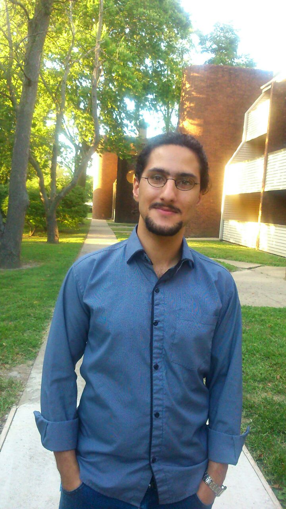

Nima Rasekh's Academic Home Page

I am a postdoctoral researcher at the
Until very recently I was a graduate student at
Max Planck Institute of Mathematics.
I mostly think about homotopy theory, particularly if it includes some category theory.
Concretely I am interested in foundations of higher category theory and higher topos theory.
Before that I was a PhD student at the
University of Illinois at Urbana-Champaign.
where I worked with my advisor Charles Rezk.
You can find out more about my research in my research statement.
Here is my current CV.
If you would like to know further about my work then feel free to email me under rasekh2 [at] illinois.edu .
Some buzz words: Higher Category Theory, Higher Topos Theory,
Elementary Topos Theory, Homotopy Type Theory
Concretely I developed a theory of elementary higher toposes and am in process of studying
topological and categorical properties.
Elementary Higher Toposes:
Theory of Higher Categories:
-
A Model for the Higher Category of Higher Categories:
We construct complete Segal spaces which model simplicial spaces, Segal spaces, complete Segal spaces
and spaces along with their universal fibrations.
-
An Introduction to Complete Segal Spaces:
This is a very intuitive introduction to higher category theory via complete Segal spaces.
It discusses subjects such as composition, functoriality, adjunctions and colimits.
-
Cartesian Fibrations and Representability -
Talk Notes 1 -
Talk Notes 2 -
Talk Notes 3:
We introduce a general method to construct fibrations that model functors
in reflective subcategories of simplicial spaces. We also show how this comes with a
model structure that we can understand very well. Using this new method we can define
representable Cartesian fibrations.
-
Yoneda Lemma for Simplicial Spaces:
We study the theory of left fibrations over simplicial spaces, by showing that left fibrations
are fibrant objects in a model structure. We use that to prove the Yoneda lemma for simplicial
spaces.
Other Work:
-
I have been running a
higher category theory seminar in Spring 2017
and collected some notes from that seminar.
Special thanks to William Balderrama, Martino Fassina, Jesse Huang,
Aristotelis Panagiotopoulos, Matej Penciak, Joseph Rennie, Brian Shin
and Josh Wen for their great talks and careful notes.
-
Analyzing RGB Images using Topology
with Ruth Davidson, Chuan Du, Rosemary Guzman, Adarsh Manawa and Christopher Szul:
In this talk we discuss how to use a code developed at Australian National University to do
image analysis with discrete Morse theory. We show how to use the code in two different scenarios:
water scarcity and crime data.
-
RGB image-based data analysis via discrete
Morse theory and persistent homology
with Ruth Davidson, Chuan Du, Rosemary Guzman, Adarsh Manawa and Christopher Szul:
We use a code developed at ANU that can detect fundamental
topological features of a grayscale image and enhance it so that it can also analyze RGB images.
As a result we can perform data analysis directly on RGB images representing water
scarcity variability as well as crime variability.
-
An Introduction to TFTs:
This is a talk I gave in the graduate student homotopy seminar.
I introduce the basic notions of topological field theories and show that even simple computations
necessitate using higher categorical tools.
-
A New Approach to Straightening:
These are my slides for the talk I gave in
GSTGC (Graduate Student Geometry Topology Conference) 2016
on April 2nd, 2016
.
I show a method to introduce the unstraightening construction to a larger
mathematical audience.
-
I took my preliminary exam March 3rd, 2015. Here is my prelim syllabus
and the slides of my prelim talk.